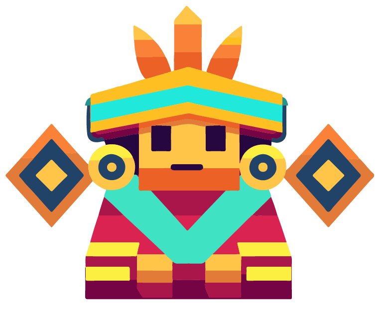
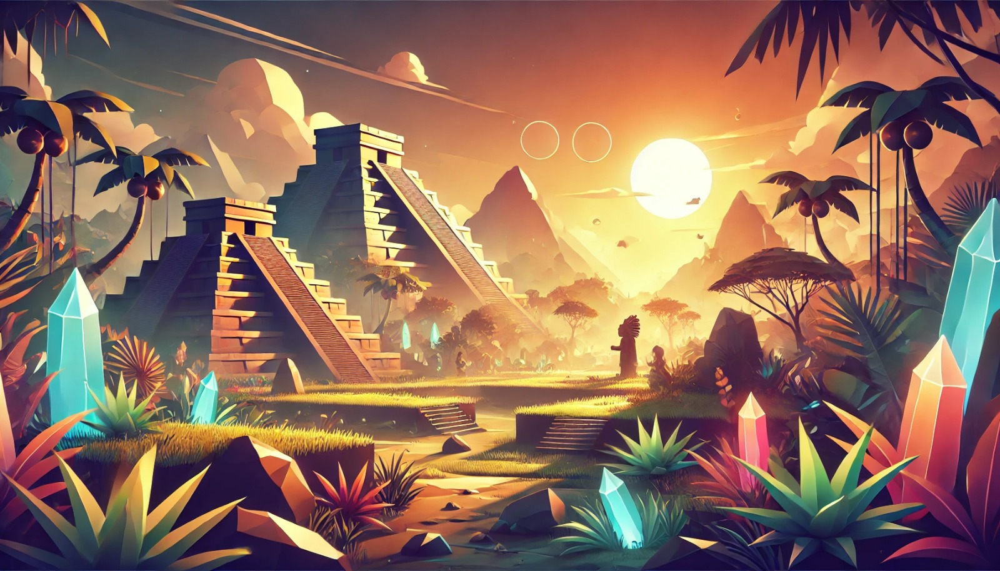
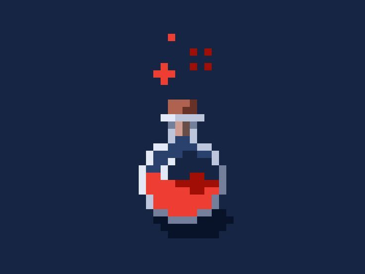

¿Qué es Agriguardians?
Es una Aplicación Interactiva
Agriguardians es un videojuego que te enseña sobre la agricultura prehispánica a través de una experiencia interactiva y educativa.


Alcanza millones de jugadores con AgriGuardians
- Explora y aprende sobre la agricultura prehispánica.
- Únete a una comunidad educativa y divertida.
Descubre el poder de la IA con nuestra suite
- Aprende con retos interactivos.
- Desarrolla tu conocimiento agrícola ancestral.
